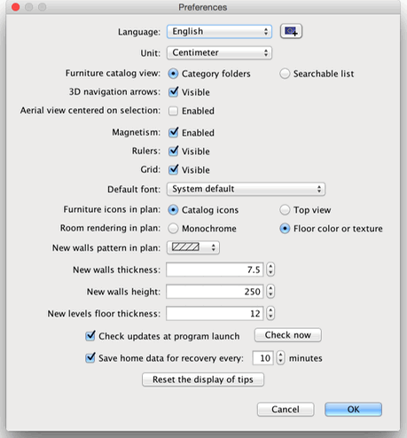

| Editing preferences | |||
To edit Sweet Home 3D preferences, choose Sweet Home 3D > Preferences... under Mac OS X or File > Preferences... under other systems.  In the preferences pane, you can choose the Language used in Sweet Home 3D user interface and the Unit used to draw the rulers and grid of the home plan, and to display lengths and areas. The Magnetism check
box enables or disables the magnetism used in the home plan during walls drawing and furniture
placing. The New walls thickness value sets the thickness of all the walls that will be created once the preferences
pane will be closed. Finally, the Reset the display of tips button resets the answers you gave to the check box Do not display this tip again shown in the tips dialog boxes displayed when you click on some tools. This means that all the dialog boxes where you selected this check box will appear again.
|


|